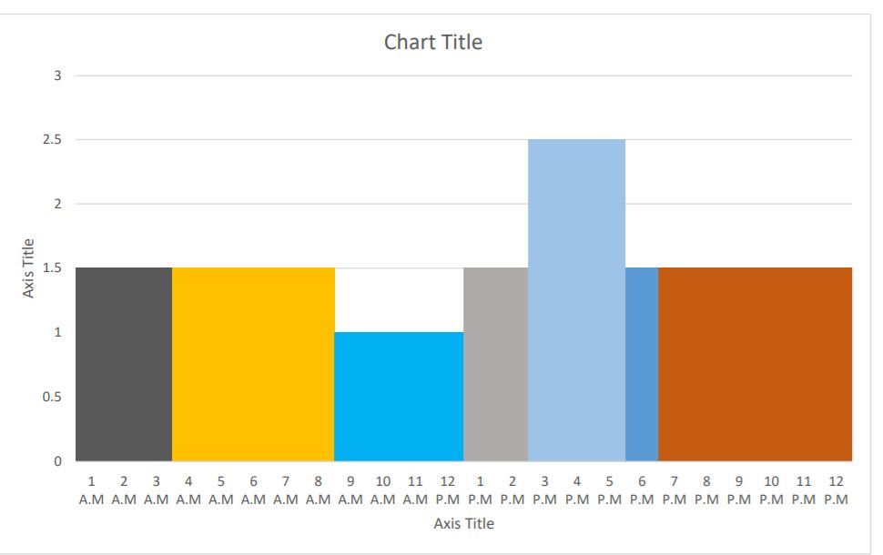
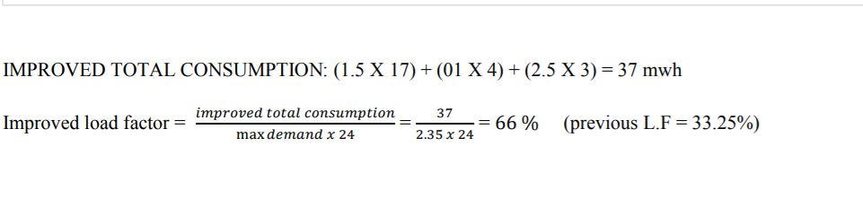

Operating Schedule
- FROM 1 A.M TO 3 A.M: from this time period we can see that if use 1.5 MW generator, it will
meet all the demands for 2 hours.
-
FROM 4 A.M TO 8 A.M: From this time period we can see that if we use 1 MW generator, it
will meet all the demands for 4 hours.
-
FROM 9 A.M TO 12 P.M: From this time period we can see that if we use 0.5 MW generator, it
will meet all the demands for 3 hours
-
FROM 1 P.M TO 2 P.M: From this time period we can see that if we use 1 MW generator, it will
meet all the demands for 1 hours
- FROM 3 P.M TO 5 P.M: From this time period we can see that if we use 2.5 MW generator, it
will meet all the demands for 2 hours.
- FROM 6 A.M TO 8 P.M: From this time period we can see that if we use 1.5 MW generator, it
will meet all the demands for 2 hours
-
FROM 9 P.M TO 12 A.M: From this time period we can see that if we use 0.5 MW generator, it
will meet all the demands for 3 hours
No of generator units
- Seeing from the load profile for 1 A.M to 8 A.M and from 6 P.M to 12 A.M we will use 1.5 MW
generator.
- Seeing from the load profile for 1 A.M to 8 A.M and from 6 P.M to 12 A.M we will use 1 MW
generator
- Seeing from the load profile for 3 A.M to 5 A.M we will use 2.5 MW generators
So, in nutshell we will use:
- 11 MW generator.
- 21.5 MW generator
- 12.5 MW generator
- In selecting generator units, we will use extra 2.5 MW generator for backup purposes if any of the
generators goes for maintenance.
Improved load profile
Load profile 2 was improved due to very poor load factor of 33.25%. You can imagine how poorly the
generation units are running and how poor the revenue is being generated. In this case we have
improved the selected load profile upto maximum limit keeping in mind all the economic factors and
technical factors. The following improved load profile is optimum in every respect which is shown
below

Improved Total Consumption

As you can previously see from load profile section that load profile 2 was the worst with 33.25% load
factor which is too much poor for any power utility to be taken under consideration. Here we have improved
load factor with the technique of taking multiple generators keeping in mind all the technical and economic
factors. Predictive operating schedule has also been given in this section above through which any power
utility can ponder upon the variation in the demand for any time period of 24 hours